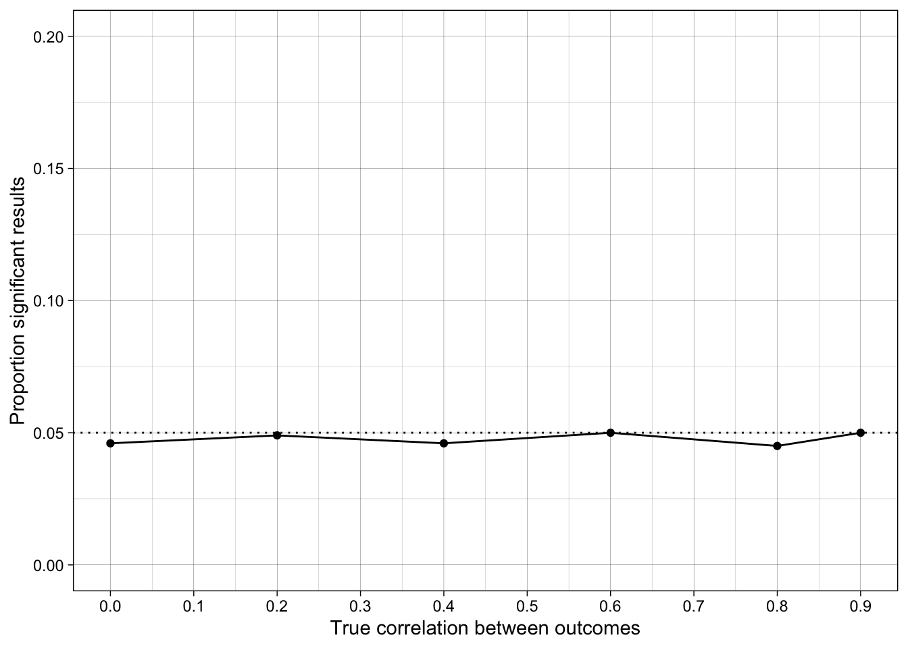
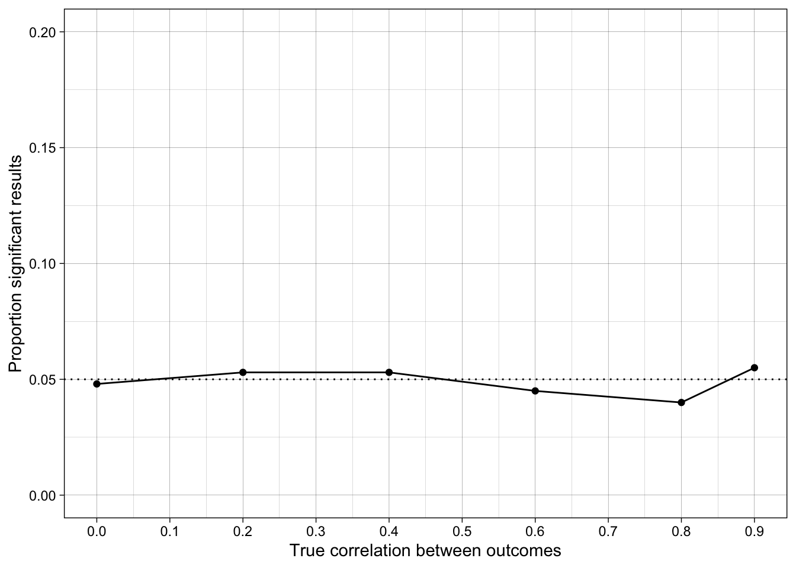
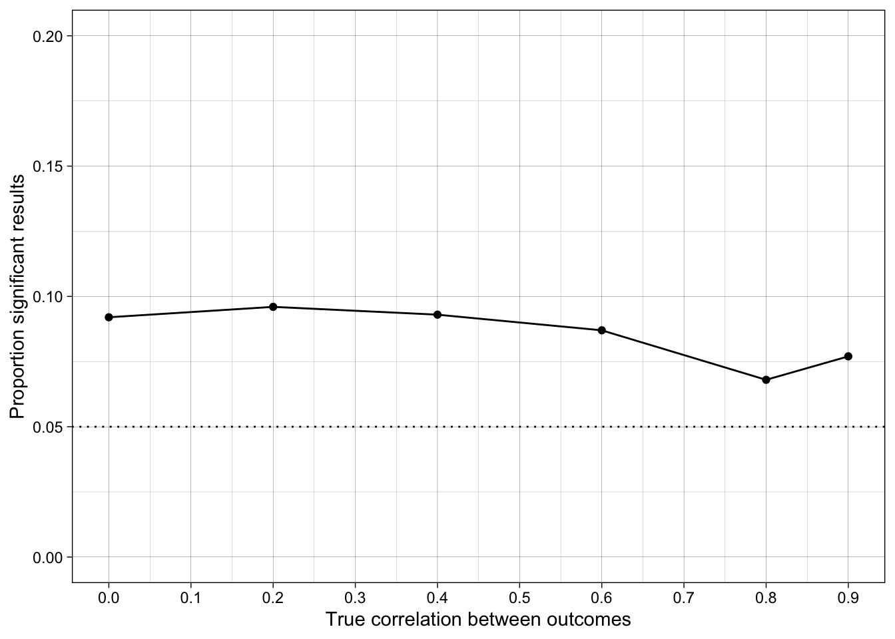

library(tidyr)
library(dplyr)
library(forcats)
library(stringr)
library(ggplot2)
library(scales)
library(patchwork)
library(tibble)
library(purrr)
library(furrr)
library(faux)
library(janitor)
#library(afex)
# set up parallelization
plan(multisession)15 p-hacking via different forms of selecting reporting ✎ Very rough draft
15.1 Overview
p-hacking is increasing the false-positive rate through analytic choices. These choices are often a) flexible, in that many different options might be tried until significance is found (Gelman called this the “Garden of Forking Paths”), and b) undisclosed. However, it need not be either in a given instance: perhaps the very first analytic strategy tried produces the significant result (but if it hadn’t, other strategies would have been tried), or perhaps the author fully discloses the analytic choices but does not make clear to the reader how this undermines the severity of the test (i.e., it takes a very close reading to understand that the results present weak evidence, or the verbal conclusions oversell this).
p-hacking can occur because of the uniform distribution of p-values under the null hypothesis. Because all values are equally likely, you just have to keep rolling the dice to eventually find p < .05.
This lesson illustrates a few different examples of one broad form of p-hacking called selective reporting.
15.2 Dependencies
15.3 Selective reporting of studies
If I run two experiments, and only report the one that “works”, I will increase the false positive rate across studies. Perhaps it is because one really is better designed etc than the other. Or perhaps its just a false positive.
What would you guess the false positive rate is for two studies?
Let’s simulate it.
15.3.1 Run simulation
generate_data <- function(n_per_condition,
mean_control,
mean_intervention,
sd) {
data_control <-
tibble(condition = "control",
score = rnorm(n = n_per_condition, mean = mean_control, sd = sd))
data_intervention <-
tibble(condition = "intervention",
score = rnorm(n = n_per_condition, mean = mean_intervention, sd = sd))
data_combined <- bind_rows(data_control,
data_intervention)
return(data_combined)
}
# define data analysis function ----
analyze <- function(data) {
students_ttest <- t.test(formula = score ~ condition,
data = data,
var.equal = TRUE,
alternative = "two.sided")
res <- tibble(p = students_ttest$p.value)
return(res)
}
# define experiment parameters ----
experiment_parameters <- expand_grid(
n_per_condition = 100,
mean_control = 0,
mean_intervention = 0,
sd = 1,
iteration = 1:1000
)
# run simulation ----
set.seed(42)
simulation <-
# using the experiment parameters
experiment_parameters |>
# generate data using the data generating function and the parameters relevant to data generation
mutate(generated_data_study1 = future_pmap(.l = list(n_per_condition,
mean_control,
mean_intervention,
sd),
.f = generate_data,
.progress = TRUE,
.options = furrr_options(seed = TRUE))) |>
mutate(generated_data_study2 = future_pmap(.l = list(n_per_condition,
mean_control,
mean_intervention,
sd),
.f = generate_data,
.progress = TRUE,
.options = furrr_options(seed = TRUE))) |>
# apply the analysis function to the generated data using the parameters relevant to analysis
mutate(results_study1 = future_pmap(.l = list(data = generated_data_study1),
.f = analyze,
.progress = TRUE,
.options = furrr_options(seed = TRUE))) |>
mutate(results_study2 = future_pmap(.l = list(data = generated_data_study2),
.f = analyze,
.progress = TRUE,
.options = furrr_options(seed = TRUE)))
# summarise simulation results over the iterations ----
simulation_summary <- simulation |>
# unnest and rename
unnest(results_study1) |>
rename(p_study1 = p) |>
unnest(results_study2) |>
rename(p_study2 = p) |>
# simulate flexible reporting
mutate(p_hacked = ifelse(p_study1 < .05, p_study1, p_study2)) |>
# summarize
summarize(prop_sig_study1 = mean(p_study1 < .05),
prop_sig_study2 = mean(p_study2 < .05),
prop_sig_hacked = mean(p_hacked < .05),
.groups = "drop") |>
pivot_longer(cols = everything(),
names_to = "Source",
values_to = "proportion_significant") |>
mutate(Source = str_remove(Source, "prop_sig_"))15.3.2 Results
simulation_summary |>
mutate_if(is.numeric, round_half_up, digits = 2) | Source | proportion_significant |
|---|---|
| study1 | 0.04 |
| study2 | 0.05 |
| hacked | 0.09 |
15.3.3 Conclusions
The false positive rate for two studies is ~10%, because each study has a 5% false positive rate.
15.3.4 Exercise: extend the simulation
Extend the simulation so that four studies are run. What do you expect the false positive rate to be? What do you find?
15.3.5 Solution
generate_data <- function(n_per_condition,
mean_control,
mean_intervention,
sd) {
data_control <-
tibble(condition = "control",
score = rnorm(n = n_per_condition, mean = mean_control, sd = sd))
data_intervention <-
tibble(condition = "intervention",
score = rnorm(n = n_per_condition, mean = mean_intervention, sd = sd))
data_combined <- bind_rows(data_control,
data_intervention)
return(data_combined)
}
# define data analysis function ----
analyze <- function(data) {
students_ttest <- t.test(formula = score ~ condition,
data = data,
var.equal = TRUE,
alternative = "two.sided")
res <- tibble(p = students_ttest$p.value)
return(res)
}
# define experiment parameters ----
experiment_parameters <- expand_grid(
n_per_condition = 100,
mean_control = 0,
mean_intervention = 0,
sd = 1,
iteration = 1:1000
)
# run simulation ----
set.seed(42)
simulation <-
# using the experiment parameters
experiment_parameters |>
# generate data using the data generating function and the parameters relevant to data generation
mutate(generated_data_study1 = future_pmap(.l = list(n_per_condition = n_per_condition,
mean_control = mean_control,
mean_intervention = mean_intervention,
sd = sd),
.f = generate_data,
.progress = TRUE,
.options = furrr_options(seed = TRUE))) |>
mutate(generated_data_study2 = future_pmap(.l = list(n_per_condition = n_per_condition,
mean_control = mean_control,
mean_intervention = mean_intervention,
sd = sd),
.f = generate_data,
.progress = TRUE,
.options = furrr_options(seed = TRUE))) |>
mutate(generated_data_study3 = future_pmap(.l = list(n_per_condition = n_per_condition,
mean_control = mean_control,
mean_intervention = mean_intervention,
sd = sd),
.f = generate_data,
.progress = TRUE,
.options = furrr_options(seed = TRUE))) |>
mutate(generated_data_study4 = future_pmap(.l = list(n_per_condition = n_per_condition,
mean_control = mean_control,
mean_intervention = mean_intervention,
sd = sd),
.f = generate_data,
.progress = TRUE,
.options = furrr_options(seed = TRUE))) |>
# apply the analysis function to the generated data using the parameters relevant to analysis
mutate(results_study1 = future_pmap(.l = list(data = generated_data_study1),
analyze,
.progress = TRUE,
.options = furrr_options(seed = TRUE))) |>
mutate(results_study2 = future_pmap(.l = list(data = generated_data_study2),
analyze,
.progress = TRUE,
.options = furrr_options(seed = TRUE))) |>
mutate(results_study3 = future_pmap(.l = list(data = generated_data_study3),
analyze,
.progress = TRUE,
.options = furrr_options(seed = TRUE))) |>
mutate(results_study4 = future_pmap(.l = list(data = generated_data_study4),
analyze,
.progress = TRUE,
.options = furrr_options(seed = TRUE)))
# summarise simulation results over the iterations ----
simulation_summary <- simulation |>
# unnest and rename
unnest(results_study1) |>
rename(p_study1 = p) |>
unnest(results_study2) |>
rename(p_study2 = p) |>
unnest(results_study3) |>
rename(p_study3 = p) |>
unnest(results_study4) |>
rename(p_study4 = p) |>
# simulate flexible reporting
mutate(p_hacked = case_when(p_study1 < .05 ~ p_study1,
p_study2 < .05 ~ p_study2,
p_study3 < .05 ~ p_study3,
TRUE ~ p_study4)) |>
# summarize
summarize(prop_sig_study1 = mean(p_study1 < .05),
prop_sig_study2 = mean(p_study2 < .05),
prop_sig_study3 = mean(p_study3 < .05),
prop_sig_study4 = mean(p_study4 < .05),
prop_sig_hacked = mean(p_hacked < .05),
.groups = "drop") |>
pivot_longer(cols = everything(),
names_to = "Source",
values_to = "proportion_significant") |>
mutate(Source = str_remove(Source, "prop_sig_"))
simulation_summary |>
mutate_if(is.numeric, round_half_up, digits = 2)| Source | proportion_significant |
|---|---|
| study1 | 0.04 |
| study2 | 0.05 |
| study3 | 0.04 |
| study4 | 0.05 |
| hacked | 0.17 |
15.4 False positive rates
Note that these probabilities are merely additive. This might not be intuitive.
While the false positive rate for any individual test is 5%, the probability of finding at least one significant results in exactly \(k\) number of tests follows the equation:
\[ FPR = 1-(1-\alpha)^k, \]
where \(\alpha\) is the alpha value for the tests (e.g., 0.05) and \(k\) is the number of tests run.
We can write a function to calculate the FPR mathematically for different values of \(\alpha\) and \(k\).
fpr <- function(k, alpha = 0.05){
fpr <- 1 - (1 - alpha)^k
return(fpr)
}
dat_fpr <- tibble(k = seq(from = 1, to = 10, by = 1)) |>
mutate(fpr = map_dbl(k, fpr))
dat_fpr |>
mutate_if(is.numeric, round_half_up, digits = 2)| k | fpr |
|---|---|
| 1 | 0.05 |
| 2 | 0.10 |
| 3 | 0.14 |
| 4 | 0.19 |
| 5 | 0.23 |
| 6 | 0.26 |
| 7 | 0.30 |
| 8 | 0.34 |
| 9 | 0.37 |
| 10 | 0.40 |
15.5 Selective reporting of hypotheses / HARKing
Aka lack of familywise error correction. NB this might sometimes be seen more like selective interpretation if all results are reported, or just low test severity.
ANOVAs are, statistically speaking, somewhat dangerous because a) they by default include interactions among independent variables, but b) they do not by default apply familywise error corrections.
This means that if I include \(k\) independent variables, it produces \(2^k - 1\) p values for its main and interaction effects. This can rapidly increase the FPR. Until relatively recently, many people were also taught that ANOVA inherently corrects for multiple testing, when it does not - I was taught this in my Bachelors.
15.5.1 Run simulation - not working
I’ve written the generate data code in a more abstract way so that the number of independent variables can be changed easily.
# # define generate data function ----
# generate_data <- function(n,
# ivs,
# mu = 0,
# sd = 1) {
#
# n_iv <- function(n) {
# strings <- paste(sapply(1:n, function(i) paste0("x", i, " = c(group1 = 'Condition 1', group2 = 'Condition 2')")), collapse = ", ")
# single_string <- paste(strings, collapse = ", ")
# list_string <- paste0("list(", single_string, ")")
# return(list_string)
# }
#
# data <- sim_design(between = eval(parse(text = n_iv(ivs))),
# n = 100,
# mu = mu,
# sd = sd,
# plot = FALSE) |>
# mutate(id = as.factor(id))
#
# return(data)
# }
#
# # define data analysis function ----
# analyse_data <- function(data, ivs) {
#
# # generate a list of IVs
# generate_c_string <- function(n) {
# sapply(1:n, function(i) paste0("x", i))
# }
#
# # define contrasts option so it doesn't print message on every iteration
# options(contrasts = c("contr.sum", "contr.poly"))
#
# fit <- afex::aov_ez(id = "id",
# dv = "y",
# between = generate_c_string(ivs),
# data = data,
# anova_table = "pes")
#
# results <- fit$anova_table |>
# rownames_to_column(var = "parameter") |>
# rename(p = `Pr(>F)`,
# partial_eta_2 = pes,
# num_df = `num Df`,
# den_df = `den Df`)
#
# return(results)
# }
#
#
# # simulation conditions ----
# experiment_parameters_grid <- expand_grid(
# n = 100,
# ivs = 2,
# mu = 0,
# sd = 1,
# iteration = 1:1000
# )
#
# # run simulation ----
# set.seed(42)
#
# simulation <-
# # using the experiment parameters
# experiment_parameters_grid |>
#
# # generate data using the data generating function and the parameters relevant to data generation
# mutate(generated_data = future_pmap(.l = list(n = n,
# ivs = ivs,
# mu = mu,
# sd = sd),
# .f = generate_data,
# .progress = TRUE,
# .options = furrr_options(seed = TRUE))) |>
#
# # apply the analysis function to the generated data using the parameters relevant to analysis
# mutate(analysis_results = future_pmap(.l = list(generated_data = generated_data,
# ivs = ivs),
# .f = analyse_data,
# .progress = TRUE,
# .options = furrr_options(seed = TRUE)))15.5.2 Results
15.5.2.1 FPR by effect
# simulation_summary <- simulation |>
# unnest(analysis_results) |>
# # summarize
# group_by(ivs, parameter) |>
# summarize(proportion_positive_results = mean(p < .05))
#
# simulation_summary |>
# mutate_if(is.numeric, round_half_up, digits = 2)15.5.2.2 FPR by ANOVA
# simulation_summary <- simulation |>
# unnest(analysis_results) |>
# # summarize
# group_by(ivs, iteration) |>
# summarize(minimum_p = min(p)) |>
# group_by(ivs) |>
# summarize(proportion_positive_results = mean(minimum_p < .05))
#
# simulation_summary |>
# mutate_if(is.numeric, round_half_up, digits = 2)15.5.2.3 FPR by ANOVA with familywise error corrections
# simulation_summary <- simulation |>
# unnest(analysis_results) |>
# # summarize
# group_by(ivs, iteration) |>
# mutate(p_adjusted = p.adjust(p, method = "holm")) |>
# summarize(minimum_p_adjusted = min(p_adjusted)) |>
# group_by(ivs) |>
# summarize(proportion_positive_results = mean(minimum_p_adjusted < .05))
#
# simulation_summary |>
# mutate_if(is.numeric, round_half_up, digits = 2) 15.5.3 Conclusions
The results are similar to the first simulation on multiple studies because the tests are independent.
15.5.4 Exercise: extend the simulation
Increase the number of IVs included and observe the increase in FPR. This should follow the mathematical solution for the FPR (with some error), but simulating it allows us to see it happening rather than taking the math at face value.
15.6 Selective reporting of outcomes
Aka outcome switching.
There are of course situations where the tests are not independent, and this makes it more complicated to understand the FPR. For example, imagine I am interested in the impact of CBT on depression, but I include multiple measures of depression and report the one that ‘worked’.
15.6.1 Generate correlated data
We haven’t simulated correlated data before so lets do that first.
set.seed(42)
dat <-
faux::rnorm_multi(n = 1000,
mu = c(0, 0),
sd = c(1, 1),
r = -0.7,
varnames = c("var1", "var2"))
cor(dat) var1 var2
var1 1.0000000 -0.7083632
var2 -0.7083632 1.0000000ggplot(dat, aes(var1, var2)) +
geom_point(alpha = 0.4) +
theme_linedraw()
15.6.2 Generate data
Correlated outcomes, known groups differences.
generate_data <- function(n_per_condition,
r_between_outcomes,
mu_control, # vector of length 1 or k
mu_intervention, # vector of length 1 or k
sigma_control = 1, # vector of length 1 or k
sigma_intervention = 1) { # vector of length 1 or k
# generate data by condition
data_control <-
rnorm_multi(n = n_per_condition,
mu = mu_control,
sd = sigma_control,
r = r_between_outcomes,
varnames = c("outcome1", "outcome2")) |>
mutate(condition = "Control")
data_intervention <-
rnorm_multi(n = n_per_condition,
mu = mu_intervention,
sd = sigma_intervention,
r = r_between_outcomes,
varnames = c("outcome1", "outcome2")) |>
mutate(condition = "Intervention")
# combine
data_combined <-
bind_rows(data_control,
data_intervention) |>
mutate(condition = fct_relevel(condition, "Intervention", "Control"))
return(data_combined)
}Check the function works
# simulate data
set.seed(42)
dat <- generate_data(n_per_condition = 100000,
r_between_outcomes = 0.6,
mu_control = 0,
mu_intervention = c(1.5, 1.3))
# parameter recovery
dat |>
group_by(condition) |>
summarize(mean_outcome1 = mean(outcome1),
mean_outcome2 = mean(outcome2),
correlation = cor(outcome1, outcome2)) |>
mutate_if(is.numeric, round_half_up, digits = 2)| condition | mean_outcome1 | mean_outcome2 | correlation |
|---|---|---|---|
| Intervention | 1.5 | 1.3 | 0.6 |
| Control | 0.0 | 0.0 | 0.6 |
15.6.3 Run simulation
# define data analysis function ----
analyze <- function(data, outcome) {
data_renamed <- data |>
rename(score = {{outcome}})
students_ttest <- t.test(formula = score ~ condition,
data = data_renamed,
var.equal = TRUE,
alternative = "two.sided")
res <- tibble(p = students_ttest$p.value)
return(res)
}
# define experiment parameters ----
experiment_parameters <- expand_grid(
n_per_condition = 100,
r_between_outcomes = c(0, .2, .4, .6, .8, .9),
mu_control = 0,
mu_intervention = 0,
iteration = 1:1000
)
# run simulation ----
set.seed(42)
simulation <-
# using the experiment parameters
experiment_parameters |>
# generate data using the data generating function and the parameters relevant to data generation
mutate(generated_data = future_pmap(.l = list(n_per_condition,
r_between_outcomes,
mu_control,
mu_intervention),
.f = generate_data,
.progress = TRUE,
.options = furrr_options(seed = TRUE))) |>
# apply the analysis function to the generated data using the parameters relevant to analysis
mutate(results_outcome1 = future_pmap(.l = list(data = generated_data,
outcome = "outcome1"),
.f = analyze,
.progress = TRUE,
.options = furrr_options(seed = TRUE)),
results_outcome2 = future_pmap(.l = list(data = generated_data,
outcome = "outcome2"),
.f = analyze,
.progress = TRUE,
.options = furrr_options(seed = TRUE)))
# summarise simulation results over the iterations ----
simulation_summary <- simulation |>
# unnest and rename
unnest(results_outcome1) |>
rename(outcome1_p = p) |>
unnest(results_outcome2) |>
rename(outcome2_p = p) |>
# simulate flexible reporting
mutate(hacked_p = ifelse(outcome1_p < .05, outcome1_p, outcome2_p)) |>
# summarize
group_by(n_per_condition,
r_between_outcomes,
mu_control,
mu_intervention) |>
summarize(prop_sig_outcome1 = mean(outcome1_p < .05),
prop_sig_outcome2 = mean(outcome2_p < .05),
prop_sig_hacked = mean(hacked_p < .05),
.groups = "drop") 15.6.4 Results
ggplot(simulation_summary, aes(r_between_outcomes, prop_sig_outcome1)) +
geom_hline(yintercept = 0.05, linetype = "dotted") +
geom_point() +
geom_line() +
scale_x_continuous(breaks = breaks_pretty(n = 9), name = "True correlation between outcomes") +
scale_y_continuous(limits = c(0, .2), breaks = breaks_pretty(n = 5), name = "Proportion significant results") +
theme_linedraw() +
scale_color_viridis_d(begin = 0.2, end = 0.8) 
ggplot(simulation_summary, aes(r_between_outcomes, prop_sig_outcome2)) +
geom_hline(yintercept = 0.05, linetype = "dotted") +
geom_point() +
geom_line() +
scale_x_continuous(breaks = breaks_pretty(n = 9), name = "True correlation between outcomes") +
scale_y_continuous(limits = c(0, .2), breaks = breaks_pretty(n = 5), name = "Proportion significant results") +
theme_linedraw() +
scale_color_viridis_d(begin = 0.2, end = 0.8) 
ggplot(simulation_summary, aes(r_between_outcomes, prop_sig_hacked)) +
geom_hline(yintercept = 0.05, linetype = "dotted") +
geom_point() +
geom_line() +
scale_x_continuous(breaks = breaks_pretty(n = 9), name = "True correlation between outcomes") +
scale_y_continuous(limits = c(0, .2), breaks = breaks_pretty(n = 5), name = "Proportion significant results") +
theme_linedraw() +
scale_color_viridis_d(begin = 0.2, end = 0.8) 
15.6.5 Conclusions
How does the false positive rate change when the outcome measures are correlated?
15.7 Check your learning
Would this problem be solved/improved if the authors reported the results of all outcome variables, not just the ones that ‘worked’?
15.7.1 Answer
No - read about conjunctive vs disjunctive inferences [REF].
15.7.2 Exercise: extend the simulation
Extend the simulation to include additional outcome variables.
15.8 Readings
- Cramer, A.O.J., van Ravenzwaaij, D., Matzke, D. et al. Hidden multiplicity in exploratory multiway ANOVA: Prevalence and remedies. Psychon Bull Rev 23, 640–647 (2016). https://doi.org/10.3758/s13423-015-0913-5
- Stefan, A. M. and Schönbrodt F. D. (2023) Big little lies: a compendium and simulation of p-hacking strategies. Royal Society Open Science. 10220346 http://doi.org/10.1098/rsos.220346